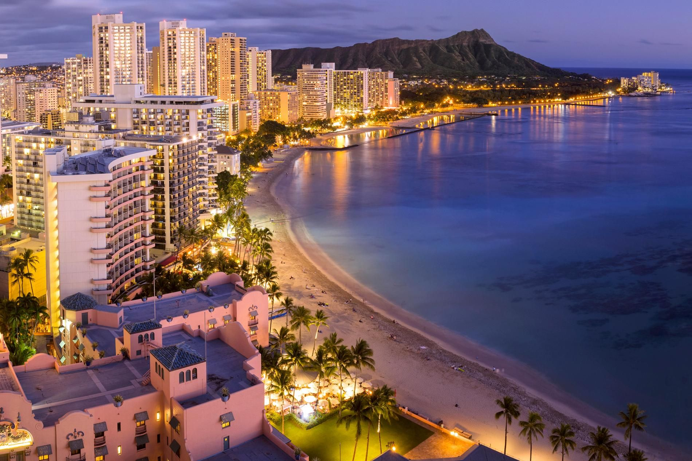
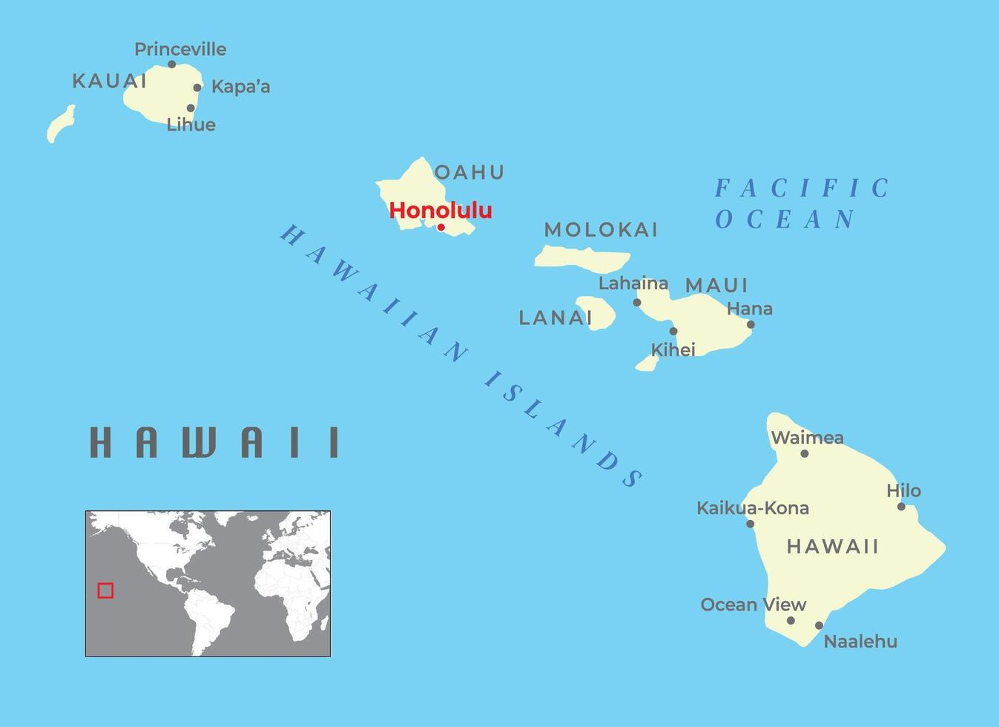

The history of Honolulu begins with the arrival of Polynesians, who were the first to settle the Hawaiian Islands around 1,000 to 1,200 AD. These skilled navigators used the stars, ocean currents, and wind patterns to voyage across the vast Pacific Ocean from places like Tahiti and the Marquesas Islands. Upon their arrival, they established communities across the Hawaiian archipelago, including on the island of Oahu. The area now known as Honolulu was initially a small settlement. The ancient Hawaiians, or Kanaka Maoli, lived in harmony with the land and the sea, practicing sustainable agriculture, fishing, and aquaculture. The fertile lands around what is now downtown Honolulu were used for growing taro, a staple crop used to make poi, a traditional Hawaiian food. Honolulu, meaning “sheltered harbor” or “calm port,” was named for its naturally protected harbor, which became an important site for trade and transportation among the islands. The region was also known for its freshwater springs, which provided a vital resource for the early settlers.
